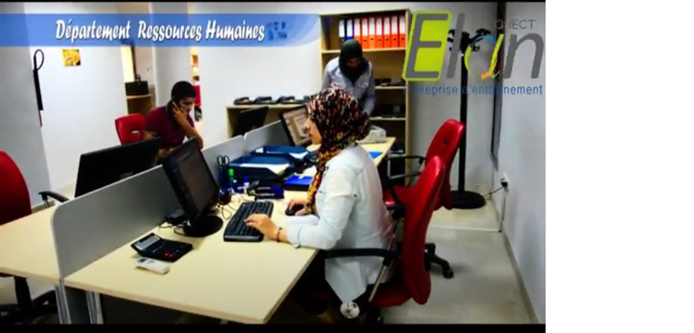

Départements Ressources Humaines

- Effectuer le suivi administratif des opérations de gestion des ressources humaines : recrutement,...
- Suivre et mettre à jour les dossiers individuels des salariés et réaliser les déclarations réglementaires.
- Elaborer et actualiser les supports de suivi et de gestion des ressources humaines : tableaux de bord sociaux, grilles de salaires, plannings des congés,...
- Saisir les éléments des paies (primes, indemnités, traitements mensuels, retenues, ...) et contrôler les bulletins de salaires.